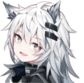

Página de Rodrigo Apaza
Nací el 5 de mayo del año 2001, el tercer hijo y el único varón de 2 chicas, estuve en la incubadora un lapso de tiempo para poder desarrollarme mejor, tuve una buena infancia, como era el menor, era colmado de mimos por parte de mis padres y de mis hermanas, me cuidaban y protegían mucho. Estaba en el kinder Corina Gallardo de la cual estaba bien y tuve buenos momentos.
Después de ello, me inscribieron en la escuela U.E. República de Mexico de la cual conocí a mis compañeros y posteriormente, mis amigos. había momentos que me molestaban por mi nombre o solo por jugar con las niñas ya que durante esas épocas "es de maricón que un niño juegue con las niñas", era aplicado pero hubo años donde mis notas bajaban por algunos temas personales pero logré pasar el 6to curso con buenas notas y como abanderado.
Después de ello, me inscribieron en la escuela U.E. República de Mexico de la cual conocí a mis compañeros y posteriormente, mis amigos. había momentos que me molestaban por mi nombre o solo por jugar con las niñas ya que durante esas épocas "es de maricón que un niño juegue con las niñas", era aplicado pero hubo años donde mis notas bajaban por algunos temas personales pero logré pasar el 6to curso con buenas notas y como abanderado.
Despúes de cursar el 6to curso de primaria, junto a mis amigos me inscribí a la U.E. Antonio Diaz Villamil, un colegio de puro varones por parte del lado estudiantil, aqui fue donde nos disciplinaban cuando en casa no lo hacía. También fue el momento que me acosaban solo por ser lo que soy, uno aprende a defenderse a pesar de que es pequeño o nunca haya peleado, llegué a conocer a grandes docentes de las cuales los recuerdo con cariño y que me enseñaron varias lecciones de vida.
Al igual que en primaria, llegué a fallar y tenía familiares que me comparaban con un compañero que era en ese momento, el mejor alumno del curso. En vez de alentarme a mejorar, solo me alentaba a empeorar, tenía un efecto contrario en mi y fue mi hermana mayor que los cayó y dijo que compararme solo empeoraría mi caso, ese fue el momento cuando decidí demostrar mi valía, me esforcé en clases sacando buenas notas, llegando a ser 3er abanderado o el tercer mejor alumno entre los chicos de la promo 2018 y el chico con el que tanto me comparaban estaba detrás de mi, llegué a superar al mejor alumno del curso y demostré que lo hice sin que me estuvieran comparando cada vez que fallaba.
Al igual que en primaria, llegué a fallar y tenía familiares que me comparaban con un compañero que era en ese momento, el mejor alumno del curso. En vez de alentarme a mejorar, solo me alentaba a empeorar, tenía un efecto contrario en mi y fue mi hermana mayor que los cayó y dijo que compararme solo empeoraría mi caso, ese fue el momento cuando decidí demostrar mi valía, me esforcé en clases sacando buenas notas, llegando a ser 3er abanderado o el tercer mejor alumno entre los chicos de la promo 2018 y el chico con el que tanto me comparaban estaba detrás de mi, llegué a superar al mejor alumno del curso y demostré que lo hice sin que me estuvieran comparando cada vez que fallaba.
En el 2019 me tomé un descanso y fue cuando llegó la pandemia del Covid-19, un golpe para todo el mundo y en especial para las personas que trabajaban en el día a día, fue algo que nadie esperaba y fue también que mi apendice reventó y lo que debió ser un apendicitis, terminó convirtiendose una peritonitis y me llevaron de urgnecia al hospital, estuve internado durante 10 días en el hospital y tenía una amiga de España, una persona a la cual podía llamarle hermana, era alguien muy cercana a mí,
estuvo conmigo en los momentos mas bajos y me cuidaba, se preocupaba de que estuviera bien, ella estudiaba y su sueño es ser maestra de Latín. Cuando me dieron el alta del hospital fue el día que ella "desapareció" y no tuve alguna pista de su vida hasta ahora... muchas personas me dijeron que fue un ángel, alguien quien me cuidó en mi peor momento y al ver que ya estaba mejor volvió al cielo. Es un argumento válido, si ella fue mi ángel y si está allá arriba, espero le lleguen mis palabras y que me siga cuidando.
Durante ese año entablé amistad con otra chica de España, una chica tímida pero de un corazón puro, llegamos a ser amigos pero ella tenía problemas personales, cuando ella pasa por un mal día, yo me aseguro de alegrarla y cuidarla, entonces empecé a tomar el rol de su hermano mayor para protegerla de todo mal futuro, esto fue un punto importante de mi vida: empecé a conocer a personas y amigos con algún problema de depresión, autoestima o alguna herida emocional, es como si Dios me dijera: "Hijo, esta persona tiene problemas en su vida, quisiera que lo cuides y protegas", es algo que jamás pensé que pasaría pero no me quejo, si puedo ayudar a uno de mis amigos con sus problemas, estaré allí para él o ella. siempre podrán confiar mí.
Entré a la universidad en el 2023 por una persona, para que se sienta orgullosa de mí, poder contribuir con mis buenas acciones y ser una persona de la cual pueda confiar y sentirse orgullosa.
Durante ese año entablé amistad con otra chica de España, una chica tímida pero de un corazón puro, llegamos a ser amigos pero ella tenía problemas personales, cuando ella pasa por un mal día, yo me aseguro de alegrarla y cuidarla, entonces empecé a tomar el rol de su hermano mayor para protegerla de todo mal futuro, esto fue un punto importante de mi vida: empecé a conocer a personas y amigos con algún problema de depresión, autoestima o alguna herida emocional, es como si Dios me dijera: "Hijo, esta persona tiene problemas en su vida, quisiera que lo cuides y protegas", es algo que jamás pensé que pasaría pero no me quejo, si puedo ayudar a uno de mis amigos con sus problemas, estaré allí para él o ella. siempre podrán confiar mí.
Entré a la universidad en el 2023 por una persona, para que se sienta orgullosa de mí, poder contribuir con mis buenas acciones y ser una persona de la cual pueda confiar y sentirse orgullosa.
GOLAZO DE ENTEL
Desde el 26 de septiembre hasta el 02 de octubre de 2024, podrás participar en la promoción denominada “GOLAZO DE ENTEL” de acuerdo a las siguientes características:
Se realizará un sorteo electrónico donde se sortearán entradas para el partido “Bolivia-Colombia” para apoyar a nuestra selección boliviana rumbo al Mundial 2026, mediante la participación de la siguiente mecánica:

Desde el 26 de septiembre hasta el 02 de octubre de 2024, podrás participar en la promoción denominada “GOLAZO DE ENTEL” de acuerdo a las siguientes características:
Se realizará un sorteo electrónico donde se sortearán entradas para el partido “Bolivia-Colombia” para apoyar a nuestra selección boliviana rumbo al Mundial 2026, mediante la participación de la siguiente mecánica:
Divertido, efectivo y gratis
Aprender con Duolingo es divertido y los estudios demuestran que funciona. ¡En nuestras lecciones cortas ganarás puntos y habilitarás nuevas unidades al mismo tiempo que desarrollas tus habilidades de comunicación en la vida real!

Aprender con Duolingo es divertido y los estudios demuestran que funciona. ¡En nuestras lecciones cortas ganarás puntos y habilitarás nuevas unidades al mismo tiempo que desarrollas tus habilidades de comunicación en la vida real!
Videos ilimitados sin anuncios
Disfruta de tus videos favoritos sin tener que esperar a que terminen los anuncios. Encuentra instructivos útiles, prueba recetas nuevas o ejercítate con tus creadores favoritos, sin interrupciones.

Disfruta de tus videos favoritos sin tener que esperar a que terminen los anuncios. Encuentra instructivos útiles, prueba recetas nuevas o ejercítate con tus creadores favoritos, sin interrupciones.